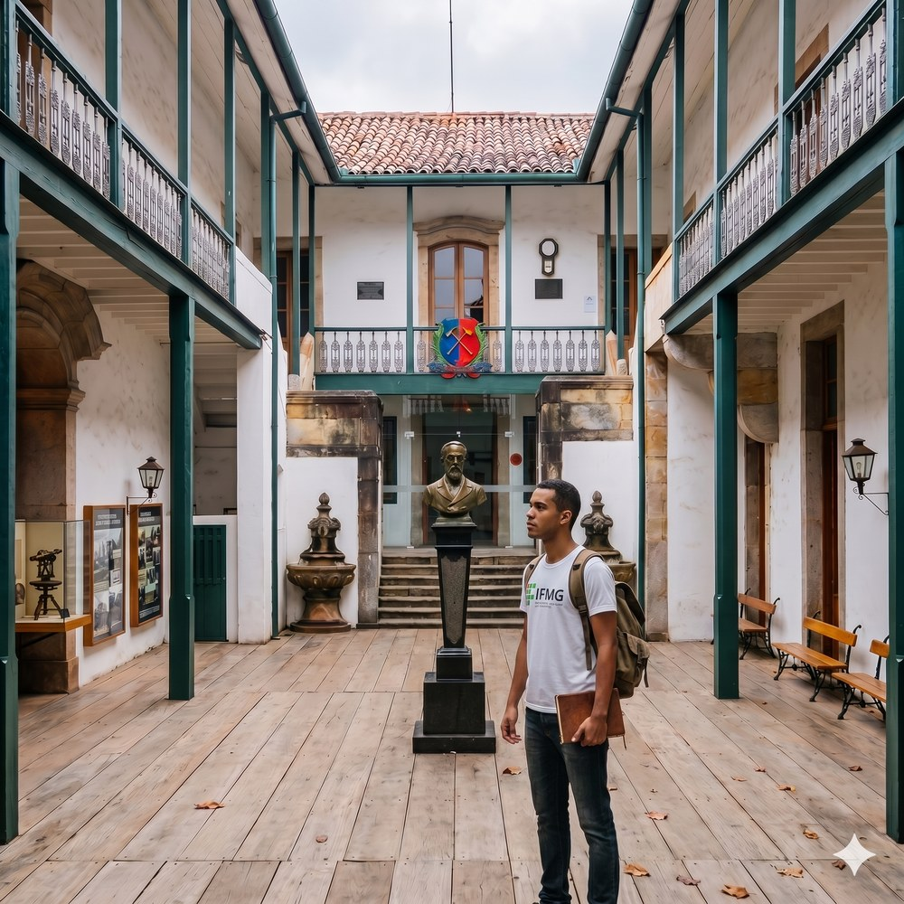
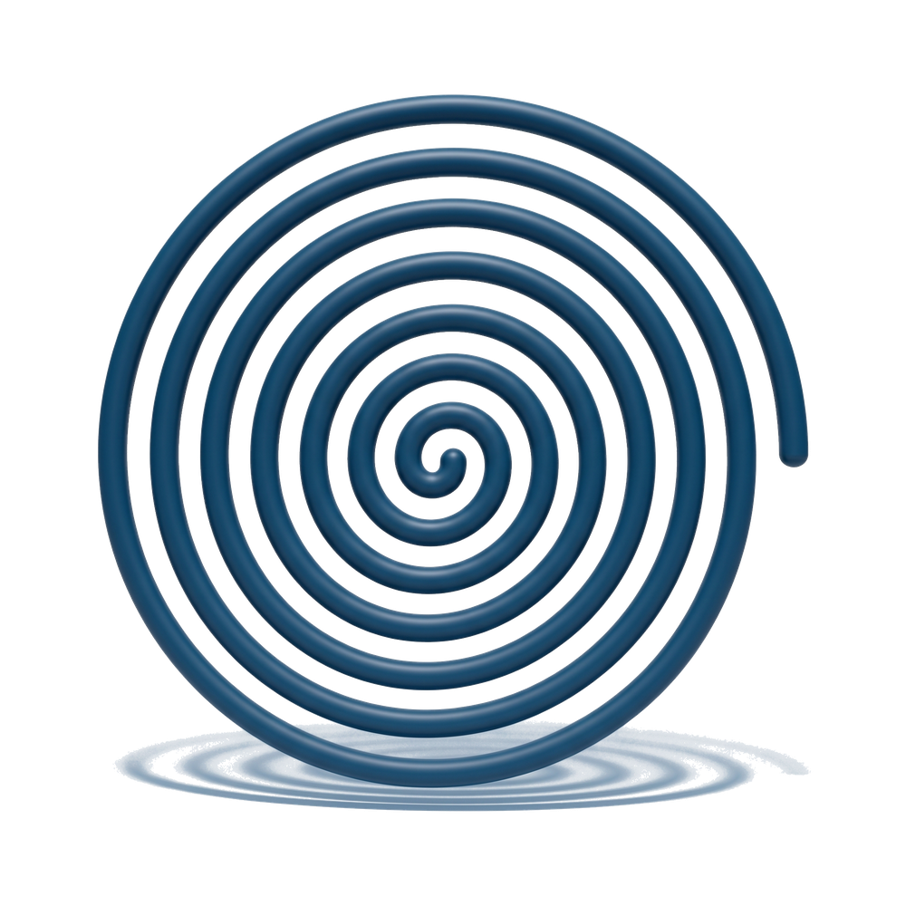
“Dê-me o resultado aproximado; o exato eu calculo depois.”
A friagem de maio em Ouro Preto entrava pelas janelas altas do Museu de Ciência e Técnica da UFOP antes mesmo de Lucas, Sofia e Pedro cruzarem o portão de grade de ferro na Praça Tiradentes, número 20. Era quase oito da manhã. O quartzito irregular do calçamento ainda estava molhado de orvalho, com os cristais de quartzo faiscando no sol que tentava vencer a nuvem baixa sobre o Itacolomi. O badalar abafado dos sinos de São Francisco de Assis chegava de longe, uma batida por segundo — um metrônomo do século XVIII marcando o tempo que a cidade ainda insistia em medir à moda antiga.
Lucas entrou primeiro. Filho de artesão de pedra-sabão de Santa Rita de Ouro Preto, ele conhecia aquele cheiro de madeira antiga e cera fria de um jeito que não precisava de explicação — era o mesmo cheiro das gavetas do ateliê do avô, onde cristais de quartzo fumê esperavam pacientemente para virar peças de artesanato. O Museu guardava aquela quietude específica dos lugares que têm mais anos do que os visitantes. Vitrines iluminadas expunham amostras de granito com filões metálicos, barômetros de mercúrio em suportes entalhados e pranchetas de campo com escalas gravadas à mão por engenheiros do século XIX. Lucas passou os olhos devagar por cada objeto antes de dizer qualquer coisa. Era o tipo que preferia verificar antes de concluir.
Sofia se inclinava sobre cada etiqueta com o mesmo interesse com que lia manuais técnicos — devorando dados, procurando o padrão escondido. Pedro andava com as mãos nos bolsos, olhando para os objetos com a pergunta não-dita de todo técnico prático: para que isso servia, de verdade, no campo?
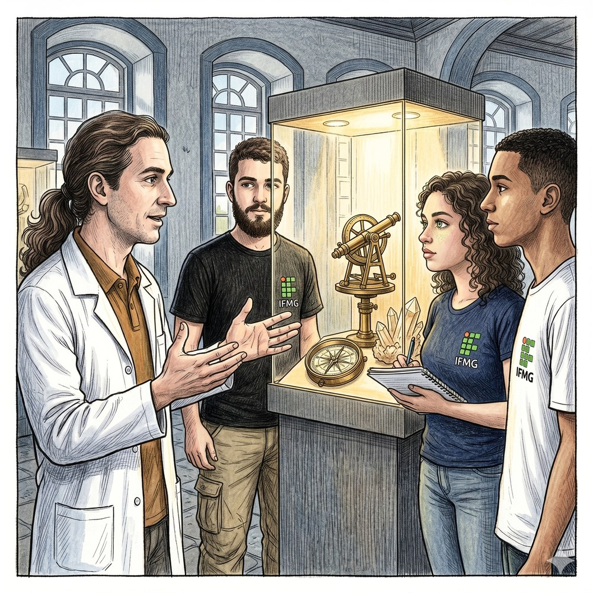
O Prof. Julio os esperava no centro da sala principal, diante de uma vitrine que exibia o que o cartaz interno chamava de Coleção de Instrumentos de Estimativa — Séc. XVIII–XIX: um gnômon portátil de madeira e bronze, uma régua de proporção com divisões logarítmicas marcadas a buril, e um instrumento de aspecto misterioso que parecia um compasso gigante com escalas gravadas nos braços.
— Bom dia — disse o Prof. Julio, sem preâmbulos. — Olhem para esse compasso de escalas. — Ele apontou para o instrumento central da vitrine. — Para que ele serve?
Pedro examinou o objeto com olhos de quem já desmontou muita coisa.
— Para comparar tamanhos sem medir diretamente. Um instrumento de proporção.
— Exato. — O Prof. Julio se virou de costas para a vitrine e olhou para os três. — Agora usem o mesmo raciocínio do engenheiro colonial que usou esse instrumento: estimativa sem medição formal. — Fez uma pausa, e o silêncio nos corredores de pedra amplificou o peso da pergunta. — Quantas pedras do calçamento da Praça Tiradentes cabem entre aqui e o Sol?
O eco percorreu o corredor. Lucas ficou imóvel por um segundo completo — o tipo de pausa que precede uma resposta cuidadosa.
— Isso é impossível sem dados — disse ele, finalmente. — Não sabemos o tamanho exato de uma pedra do calçamento daquela praça. Não sabemos a distância até o Sol em unidades que possamos usar diretamente aqui.
— Sabemos tudo isso — disse Sofia, com a centelha nos olhos de quem transformou um problema abstrato em forma concreta. — A pedra tem uns 20 centímetros de lado. Vi ao entrar. O Sol está a 150 milhões de quilômetros. Dá para calcular.
— Mas dá para ser útil? — rebateu Pedro, direto. — Qual é a diferença prática entre saber que são dez elevado à vigésima pedras ou dez elevado à vigésima e uma? Nenhuma. Então o que a gente quer saber de verdade?
O Prof. Julio deixou a tensão produtiva entre os três ocupar o corredor por alguns segundos. Era exatamente esse o instante que ele esperava.
— Vocês três estão certos ao mesmo tempo — disse ele, com a calma de quem chegou a essa conclusão há muitos anos. — Lucas tem razão: precisamos de dados. Sofia tem razão: já temos dados suficientes. Pedro tem razão: o que importa não é o número exato, é a casa decimal. — Ele olhou para o compasso de escalas na vitrine. — Esse instrumento não mede o comprimento de uma coisa. Ele mede em quantas vezes ela cabe dentro de outra. Ele compara casas decimais.
Lucas olhou para o compasso com outros olhos.
— Então a pergunta do Prof. não é sobre pedras de granito.
— Não. — O Prof. Julio sorriu. — A pergunta é: vocês conseguem aprender a pensar em casas decimais? Porque se conseguirem, vão responder perguntas que nenhum instrumento convencional alcança — inclusive perguntas sobre minas, galerias, reservas minerais e equipamentos que ainda não foram medidos. — Ele se afastou em direção ao corredor mais fundo do Museu. — Venham. A resposta está nos próximos cinco tópicos.
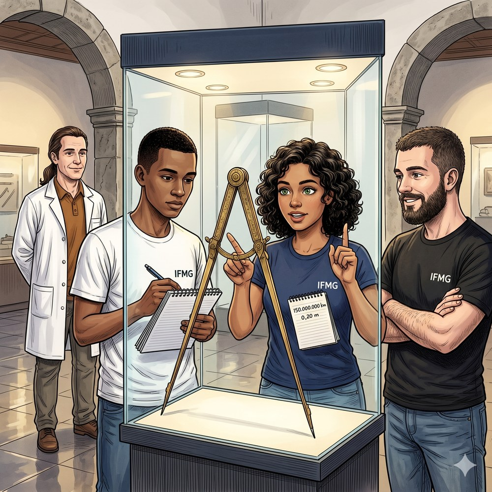
O Museu de Ciência e Técnica da UFOP funciona no prédio histórico da Escola de Minas — exatamente como descrito neste texto — na Praça Tiradentes 20, no lado norte da praça central de Ouro Preto, com a fachada colonial-neoclássica em pedra-sabão e reboco branco, o portão de grade de ferro e as janelas altas que filtram a luz da manhã sobre o piso de pedra.
Você verá a fachada colonial-neoclássica em pedra-sabão e reboco branco, o portão de grade de ferro e, virando a câmera para o sul, o monumento ao Tiradentes no centro da praça — o mesmo ângulo que Lucas, Sofia e Pedro viram ao chegar.
Cada vitrine do Museu guarda um instrumento que alguém usou para estimar, medir e decidir — ordem de grandeza aplicada à história da mineração.
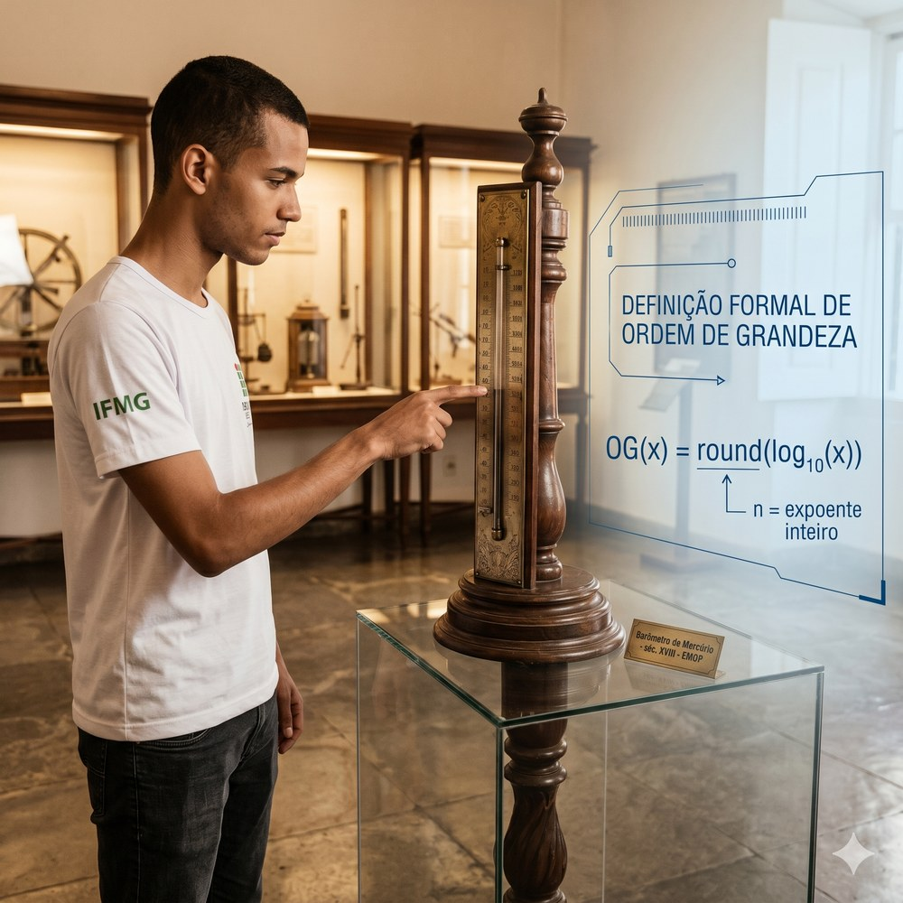
Nas galerias de mineração do século XVIII em Ouro Preto, os mestres-de-mina coloniais — muitos deles escravizados, com conhecimento técnico transmitido oralmente — operavam por estimativa sistemática: mediam galerias com passos calibrados, estimavam espessuras de filões pela palma da mão, calculavam carga de engenhos pela altura da roda d’água. Não tinham o nome formal, mas praticavam com mestria o que Enrico Fermi formalizaria dois séculos depois: decompor o desconhecido em fatores estimáveis, multiplicá-los e aceitar a resposta aproximada como suficiente para decidir. Os registros da Casa dos Contos de Ouro Preto (séc. XVIII) mostram contratos de arrendamento de engenhos cotados por “prazo de esgotamento estimado da veia” — previsão de vida útil por ordem de grandeza, sem formalismo matemático.
Uma ordem de grandeza é a potência de dez mais próxima de um número. Para um número positivo x, a ordem de grandeza n é o inteiro mais próximo de log10(x). Assim, 350 metros tem ordem de grandeza 102 (porque log10(350) ≈ 2,54, que arredonda para 3 em alguns contextos, mas a convenção física toma n = 2 pois 350 está mais próximo de 102 = 100 do que de 103 = 1 000). Uma estimativa de Fermi é uma técnica de resolução que decompõe uma grandeza desconhecida em um produto de fatores estimáveis. O resultado pode errar por um fator 2 ou 3 em cada etapa, mas raramente erra por um fator 10 completo — os erros tendem a se compensar. Enrico Fermi ficou célebre por estimar a energia da primeira bomba atômica em Los Alamos (1945) soltando pedaços de papel picado ao ver o clarão e medindo seu deslocamento — com erro inferior a um fator 2 em relação às medições instrumentais.
Na mineração cotidiana, as estimativas de Fermi antecedem qualquer levantamento formal. Antes de investir em topografia completa — que pode custar dezenas de horas-homem e equipamentos especializados — o técnico de campo estima rapidamente a tonelagem de uma pilha, o volume de rejeito em uma bacia de decantação ou a extensão de uma veia exposta. Se a estimativa indicar quantidade abaixo do limiar econômico, o levantamento detalhado sequer é iniciado. A NR-22 (item 22.3.2) exige metodologia explícita nas estimativas de reservas; o técnico que sabe trabalhar com ordens de grandeza preenche esse requisito de forma rápida e documentável.
A Definição Formal e a Lógica das Casas Decimais.
Lucas parou diante da vitrine com a régua de proporção logarítmica do século XIX. O Prof. Julio escreveu na prancheta e esperou que Lucas, que havia levantado a questão dos dados faltantes, fosse o primeiro a verificar se os dados eram mesmo suficientes.
— Temos o tamanho da pedra do calçamento: uns 20 centímetros, ou 2 × 10−1 metros. Temos a distância Terra-Sol: 150 milhões de quilômetros, ou 1,5 × 1011 metros. — Lucas anotou os valores no caderno com a precisão de quem já aprendeu que o primeiro passo de qualquer problema é inventariar o que se tem. — Para saber quantas pedras cabem, basta dividir.
| Símbolo | Grandeza | Valor / Unidade |
|---|---|---|
| OG(x) | Ordem de grandeza (expoente inteiro de base 10) | adimensional |
| x | Número positivo qualquer | distância Terra-Sol = 1,5 × 1011 m |
| log10 | Logaritmo de base 10 | log10(1,5 × 1011) ≈ 11,18 |
| round | Arredondamento ao inteiro mais próximo | round(11,18) = 11 |
Os três ingredientes da equação.
1. log10(x) — o medidor de casas decimais
O logaritmo de base 10 responde a uma única pergunta: “a que potência devo elevar 10 para obter x?” Ele transforma qualquer número positivo em um número real que expressa sua posição na escala decimal.
| x | log10(x) | Como ler |
|---|---|---|
| 10 | 1,000 | 101 — uma casa decimal |
| 100 | 2,000 | 102 — duas casas |
| 1 000 | 3,000 | 103 — três casas |
| 50 | 1,699 | entre 101 e 102 |
| 300 | 2,477 | entre 102 e 103 |
2. round( ) — o arredondamento para o inteiro mais próximo
Como log10 quase nunca resulta em inteiro exato, o arredondamento decide qual potência de 10 inteira está mais próxima: round(1,699) = 2; round(2,477) = 2; round(2,699) = 3.
3. OG — o expoente final
O resultado é um inteiro — positivo, negativo ou zero — que indica a “casa decimal” do número original. Um objeto com OG = 3 está na casa dos milhares; um com OG = −3 está na casa dos milésimos.
| x | log10(x) | round | OG | Interpretação |
|---|---|---|---|---|
| 5 | 0,699 | 1 | 1 | próximo de 101 = 10 |
| 50 | 1,699 | 2 | 2 | próximo de 102 = 100 |
| 300 | 2,477 | 2 | 2 | próximo de 102 = 100 |
| 500 | 2,699 | 3 | 3 | próximo de 103 = 1 000 |
| 8 000 | 3,903 | 4 | 4 | próximo de 104 = 10 000 |
| Faixa de x | OG |
|---|---|
| 1 a 3,16 | 0 |
| 3,16 a 31,6 | 1 |
| 31,6 a 316 | 2 |
| 316 a 3 162 | 3 |
Lucas verificou o cálculo duas vezes antes de anunciar o resultado — não por insegurança, mas por método.
— São da ordem de um trilhão de pedras. Dez elevado a doze. — Ele olhou para Pedro. — E você estava certo: a diferença entre 1012 e 1011 importa tanto quanto a diferença entre “mil caminhões” e “cem caminhões” para um engenheiro de planejamento.
| Objeto / Distância | Valor típico | OG |
|---|---|---|
| Grão de quartzo (vitrines do Museu) | 10−3 m | −3 |
| Espessura de filão de ouro (galeria histórica) | 10−2 m | −2 |
| Largura de galeria de mina (típica, séc. XVIII) | 100 m | 0 |
| Praça Tiradentes (diagonal) | 102 m | 2 |
| Distância Museu → Serra do Itacolomi | 103 m | 3 |
| Extensão do Quadrilátero Ferrífero | 105 m | 5 |
| Diâmetro da Terra | 107 m | 7 |
| Distância Terra-Sol | 1011 m | 11 |
A frase que Lucas anotou no caderno ao ver a tabela: “A ordem de grandeza é o número de zeros — não importa o que está na frente, importa quantas casas.”
O método de Fermi, que o Prof. Julio demonstrou a partir desse primeiro exemplo, consiste em cinco passos: (1) identificar a grandeza-alvo; (2) decompô-la em fatores mais simples; (3) estimar cada fator por raciocínio ou experiência; (4) multiplicar os fatores; (5) encontrar o expoente do resultado. O resultado raramente erra por mais de uma ordem de grandeza — o que, para fins de planejamento técnico, é suficientemente preciso para tomar a decisão certa.
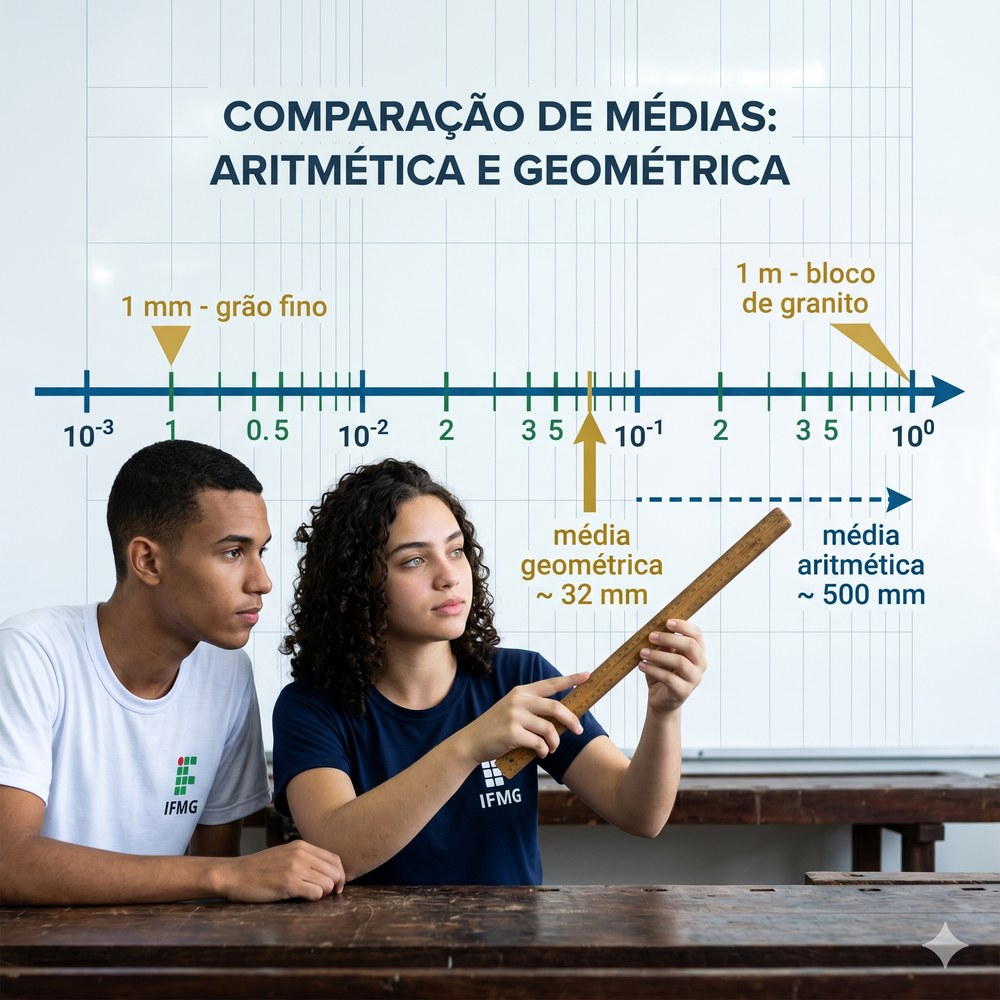
A média geométrica era conhecida dos pitagóricos no século V a.C. como a “média proporcional” — o valor que divide uma razão em escala logarítmica. Na Escola de Minas de Ouro Preto, fundada em 1876 por Henri Gorceix com manuais técnicos vindos da École des Mines de Paris, os engenheiros aprendiam a interpolar entre amostras de sondagem espaçadas usando médias geométricas. O instrumento de proporção logarítmica na vitrine do Museu realizava graficamente essa média: o ponto equidistante no braço logarítmico era a resposta visual. Não era magia nem aproximação grosseira — era a ferramenta padrão de quem precisava tomar decisões entre dois extremos de incerteza muito diferente.
Quando dois valores diferem em ordens de grandeza, a média aritmética (a+b)/2 é dominada pelo maior valor e não representa o “centro” do intervalo. A média geométrica G = √(a · b) posiciona-se exatamente no ponto médio do eixo logarítmico: G = √(10−3 × 100) = 10−1,5 ≈ 0,032 m = 32 mm — que está equidistante de 10−3 e 100 na escala logarítmica. A regra prática: se os dois extremos diferem por menos de um fator 10 (mesma ordem de grandeza), use a aritmética; se diferem por duas ou mais ordens de grandeza, use a geométrica. A escolha errada pode introduzir erro de uma ordem de grandeza inteira na estimativa final.
A norma de estimativa de recursos minerais (ABNT NBR 14853) e os guias da ANM recomendam a média geométrica em situações de alta variância amostral — como quando dois furos de sondagem em uma mesma veia indicam teores de ouro tão diferentes que a média aritmética produziria um valor economicamente absurdo como base de projeto de lavra. A NR-22 (item 22.3.2) exige metodologia explícita nas estimativas de reservas, e a escolha entre média aritmética e geométrica é parte obrigatória dessa documentação técnica.
O Centro Logarítmico.
Lucas havia pedido que os três estimassem, independentemente e sem conversar, o tamanho médio de um grão de minério na coleção do Museu. Pedro disse “uns 50 milímetros — do tamanho de uma moeda”. Lucas disse “pode ser 1 milímetro — como grão de areia fina”. A diferença era de 50 vezes — quase duas ordens de grandeza.
— Qual estimativa usar como referência? — perguntou Sofia ao Prof. Julio.
— Nenhuma isoladamente — disse ele. — Calculem o centro logarítmico das duas. Não a média que some e divide por dois. A média que multiplica e tira a raiz.
| Símbolo | Grandeza | Unidade |
|---|---|---|
| G | Média geométrica | mesma unidade de a e b |
| a | Estimativa mínima | mm |
| b | Estimativa máxima | mm |
| Símbolo | Grandeza | Unidade |
|---|---|---|
| MA | Média aritmética | mesma unidade de a e b |
| a | Estimativa mínima | mm |
| b | Estimativa máxima | mm |
Lucas comparou os dois resultados no caderno e identificou o critério:
| Situação | Mín. | Máx. | MA | MG | Adequada |
|---|---|---|---|---|---|
| Grão de minério (mm) | 1 | 50 | 25,5 | 7 | Geom. |
| Teor de ouro (g/t) | 0,5 | 5 000 | 2 500 | ∼50 | Geom. |
| N.º funcionários | 80 | 120 | 100 | 98 | Arit. |
| Compr. galeria (m) | 18 | 22 | 20 | 19,9 | Arit. |
| Vol. rejeito (m³) | 200 | 200 000 | 100 100 | 6 325 | Geom. |
— Resumindo — disse Lucas, com a síntese direta de quem verificou os casos linha a linha. — Quando os dois extremos estão na mesma casa decimal, média aritmética. Quando estão em casas diferentes — duas ou mais — média geométrica.
— Exatamente — confirmou o Prof. Julio. — É a diferença entre centrar no espaço linear e centrar no espaço logarítmico. E na mineração, a geologia sempre prefere a escala logarítmica.
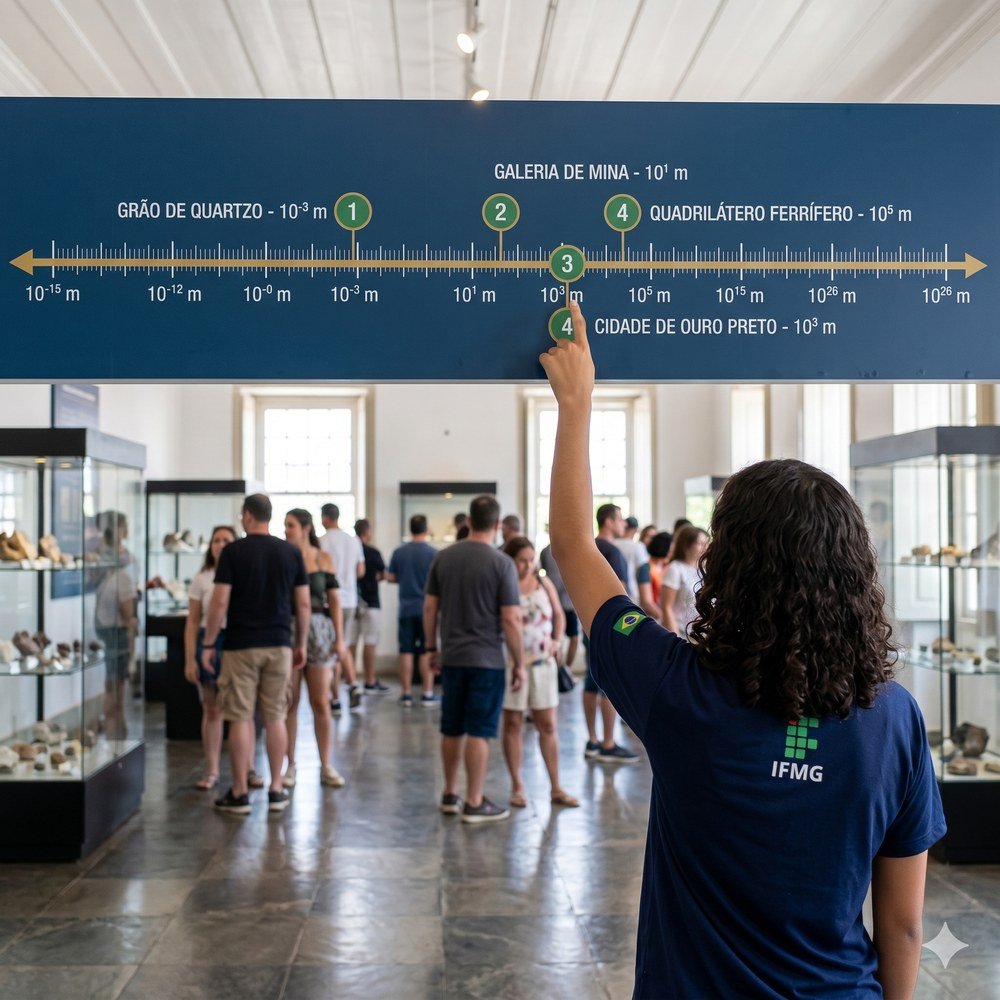
A ideia de uma hierarquia de escalas ligadas por potências de 10 remonta ao cosmógrafo Andreas Cellarius (Harmonia Macrocosmica, 1660), que tentou mapear distâncias planetárias de forma proporcional. Mas foi apenas com a geocronologia quantitativa das primeiras datações radiométricas de rochas do Quadrilátero Ferrífero (anos 1950–1960) que os geólogos mineiros perceberam concretamente a amplitude física do seu trabalho: do tamanho de um átomo de ferro em um cristal de hematita ao tamanho do Quadrilátero Ferrífero como estrutura geotectônica — uma amplitude de dezessete ordens de grandeza no mesmo objeto de estudo. A UFOP participou diretamente dessas datações a partir dos anos 1970, cruzando a história da instituição com a história do cosmos.
O universo físico se organiza em escalas que vão de 10−15 m (diâmetro do núcleo atômico) a 1026 m (raio do universo observável) — amplitude de 41 ordens de grandeza. A física quântica domina abaixo de 10−9 m; a física clássica (mecânica, fluidos, termodinâmica) governa entre 10−6 m e 107 m; a gravitação relativista torna-se relevante acima de 1022 m. A razão entre o tamanho de um grão de quartzo (10−3 m) e o diâmetro do universo observável (1026 m) é 1029 — um número que não cabe em nenhuma régua convencional, mas que a notação de potências de 10 expressa com três caracteres.
A prospecção mineral moderna exige que o técnico navegue conscientemente entre pelo menos cinco escalas de observação: atômica (composição química, analisada por espectrometria), microscópica (textura da rocha, vista em lupa), de afloramento (estrutura da veia, mapeada a campo), de depósito (geometria da jazida, modelada em software 3D) e regional (contexto geotectônico, interpretado por imagens de satélite). Cada escala exige instrumentos diferentes, mas a razão entre escalas — calculada pela diferença de expoentes de base 10 — é sempre a mesma pergunta: quantas ordens de grandeza separam o que estou vendo do que preciso entender?
Do Grão ao Cosmos — Passando por Ouro Preto.
O Prof. Julio parou diante de uma vitrine com amostras geológicas dispostas em sequência de tamanho — do menor cristal até o maior bloco de granito do acervo.
— Quantas ordens de grandeza separam o menor e o maior objeto nessa vitrine?
Sofia estava pronta. Era exatamente o tipo de pergunta que exigia traduzir escala em expoente — e para ela, a tabela do Universo não era abstração, era mapa.
— O cristal menor parece uns 2 milímetros. O bloco maior, uns 40 centímetros. A razão é 200. log10(200) ≈ 2,3. Então… duas ordens de grandeza.
| Símbolo | Grandeza | Valor |
|---|---|---|
| n1 | OG do objeto menor | grão de quartzo: n1 = −3 (10−3 m = 1 mm) |
| n2 | OG do objeto maior | extensão urbana de Ouro Preto: n2 = +3 (103 m ≈ 1 km) |
| razão | Fator pelo qual o menor cabe no maior | adimensional |
| Escala | Referência | Valor | OG |
|---|---|---|---|
| Nuclear | Núcleo atômico | 10−15 m | −15 |
| Atômica | Átomo de ferro (raio) | 10−10 m | −10 |
| Molecular | Molécula de quartzo (SiO2) | 10−9 m | −9 |
| Microscópica | Grão de minério | 10−3 m | −3 |
| Humana | Altura de um ser humano | 100 m | 0 |
| Operacional | Galeria de mina histórica | 101 m | 1 |
| Local | Cidade de Ouro Preto | 103 m | 3 |
| Regional | Quadrilátero Ferrífero | 105 m | 5 |
| Planetária | Diâmetro da Terra | 107 m | 7 |
| Astronômica | Distância Terra-Sol | 1011 m | 11 |
| Galáctica | Diâmetro da Via Láctea | 1021 m | 21 |
| Cosmológica | Universo observável | 1026 m | 26 |
Sofia anotou a razão entre o Quadrilátero Ferrífero e um grão de quartzo:
— Cem milhões de vezes — ela disse. — E os dois fazem parte do mesmo processo geológico. O grão é o final; o Quadrilátero é o começo.
— Esse é o poder das escalas logarítmicas — disse o Prof. Julio. — Elas permitem comparar coisas que nenhuma régua física consegue segurar.
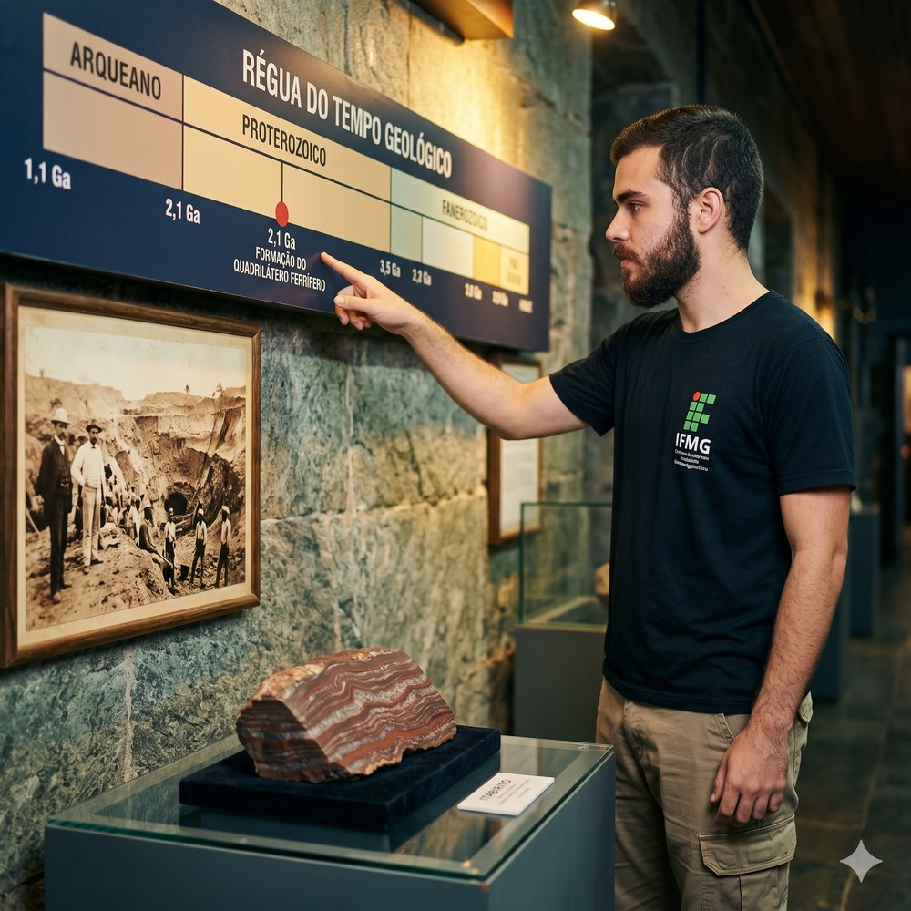
Em 1876, Henri Gorceix fundou a Escola de Minas de Ouro Preto trazendo a geologia científica francesa. Um dos primeiros choques de seus alunos era a escala do tempo geológico: jovens acostumados ao tempo humano das igrejas barrocas deparavam-se com rochas cuja idade era dezenas de milhares de vezes maior do que qualquer civilização. Gorceix insistia: “Para entender uma mina, é preciso primeiro entender que ela é mais antiga do que qualquer civilização.” As formações de itabirito e quartzito ferrífero do Quadrilátero Ferrífero — cujos afloramentos são visíveis da Praça Tiradentes em dias claros na silhueta do Itacolomi — foram depositadas no Paleoproterozoico, entre 2,5 Ga e 1,8 Ga (gigaanos). A datação radiométrica que confirmou essas idades foi feita, em parte, em laboratórios da própria UFOP a partir dos anos 1970.
A escala de tempo geológico organiza-se em Éons, Eras, Períodos e Épocas. O instrumento quantitativo que a sustenta é a datação radiométrica: medição da razão entre isótopos radioativos e seus produtos de decaimento. As unidades mais usadas são Ma (megaano = 106 anos) e Ga (gigaano = 109 anos). Uma analogia concreta: se a idade da Terra (4,6 Ga) fosse comprimida em 1 ano (365 dias), os primeiros seres multicelulares complexos apareceriam em 17 de novembro; os dinossauros surgiriam em 13 de dezembro e se extinguiriam em 26 de dezembro; o ser humano moderno apareceria em 31 de dezembro às 23h37 — e toda a história registrada da humanidade caberia nos últimos 10 segundos do ano.
O técnico em mineração precisa compreender escalas de tempo geológico por razão prática imediata: as reservas de uma mina foram geradas em escala de milhões a bilhões de anos — na escala humana, são não-renováveis, com vida útil calculável. A datação de reservas (ANM, Guia de Recursos e Reservas Minerais, 2020) exige que os projetos de lavra incluam estimativas de esgotamento que cruzam obrigatoriamente a escala geológica com a escala industrial. Pedro compreendia isso instintivamente: o que leva bilhões de anos para se formar e décadas para se extrair exige planejamento que nenhum prazo eleitoral ou contrato de arrendamento consegue abarcar sozinho.
Tempo que Não Cabe no Relógio.
Pedro parou diante de uma foto histórica ampliada que mostrava trabalhadores escavando uma galeria, sem data legível, e olhou para a régua de tempo geológico impressa na parede ao lado. Era o primeiro tópico em que o seu tipo de pensamento — viabilidade, gestão estratégica, “pra que serve isso?” — se tornava a lente principal.
— Quanto tempo levou para o minério que está nessa galeria se formar?
— Depende do tipo de depósito — respondeu o Prof. Julio. — Mas falamos de dezenas a centenas de milhões de anos de processos geológicos. Para colocar em escala:
| Símbolo | Grandeza | Unidade |
|---|---|---|
| t(s) | Tempo em segundos | s |
| t(anos) | Tempo em anos | anos |
| 3,15 × 107 | Segundos por ano (≈ π × 107) | s/ano |
| Evento | Idade real | “Data” no ano |
|---|---|---|
| Formação da Terra | 4,6 Ga | 1.º de janeiro |
| Formação do QF | ∼2,1 Ga | ∼22 de julho |
| Primeiros animais complexos | ∼600 Ma | 17 de novembro |
| Extinção dos dinossauros | ∼66 Ma | 26 de dezembro |
| Ser humano moderno | ∼300 Ka | 31/dez, 23h37 |
| Mineração em Ouro Preto (séc. XVIII) | ∼300 anos | 31/dez, 23h59min50s |
Pedro olhou para a tabela com a expressão de quem está recalibrando uma escala interna.
— Então toda a história de Ouro Preto — as minas, as igrejas, a Inconfidência — cabe nos últimos dez segundos do ano?
— Nos últimos dez segundos — confirmou o Prof. Julio. — E a rocha que os mineradores do século XVIII retiravam dessas galerias levou 2,1 bilhões de anos para chegar lá. Essa amplitude — de 100 anos a 109 anos — é mais uma vez uma questão de ordem de grandeza. Nove casas decimais de diferença entre quem extrai e o que é extraído.
— Isso muda o que significa “gerir uma reserva” — disse Pedro, com a objetividade de quem transformou o dado em decisão. — Você não está gerindo uma pilha de minério. Você está gerindo bilhões de anos de história geológica.
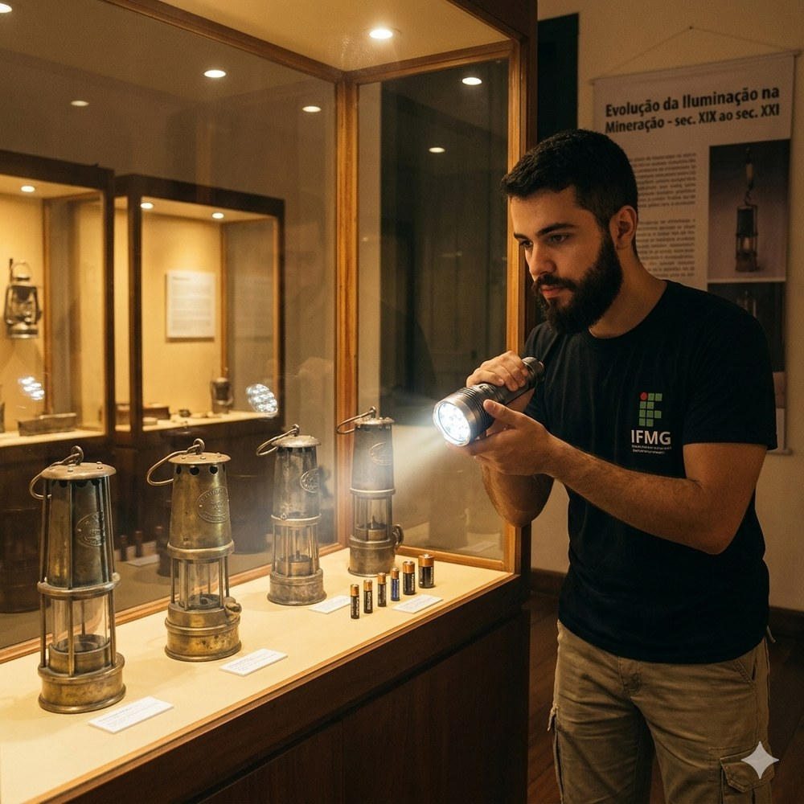
Os engenhos coloniais de mineração em Ouro Preto tinham “vidas úteis” estimadas por ordem de grandeza muito antes de qualquer formalismo técnico. Os registros da Casa dos Contos (séc. XVIII) mostram que contratos de arrendamento de engenhos eram feitos por “prazo de esgotamento estimado da veia” — previsão de vida útil por ordem de grandeza feita por mestres-de-mina sem formalismo estatístico. A lógica era idêntica à de qualquer estimativa de Fermi: volume disponível dividido pela taxa de extração estimada. Do engenho colonial à mina moderna, a estrutura do cálculo não mudou; mudaram apenas as unidades e a precisão exigida.
A carga elétrica Q de uma pilha, a corrente I que ela fornece e o tempo t de funcionamento relacionam-se pela equação fundamental t = Q/I. Uma pilha AA armazena aproximadamente 3 000 mAh = 3 Ah = 3 × 3 600 C ≈ 10 800 C ≈ 104 C. Uma lanterna de mineração LED moderna consome cerca de 0,5 A. A vida útil esperada é t = 10 800 C / 0,5 A = 21 600 s ≈ 6 horas. Essa conta — que usa apenas a definição de carga e corrente — é estruturalmente idêntica à previsão de vida de uma mina: volume de reserva dividido pela taxa de extração resulta no tempo de vida útil. As constantes físicas que tornam essa analogia precisa incluem a carga do elétron (e = 1,6 × 10−19 C) e o número de Avogadro (NA = 6,02 × 1023), que conectam a escala microscópica da eletricidade com a escala macroscópica da operação.
O cálculo de vida útil de uma mina pela ANM (Resolução n.º 68/1995) segue a mesma estrutura da equação elétrica: Vida Útil (anos) = Reservas totais (t) / Taxa de lavra anual (t/ano). Uma jazida de minério de ferro com 50 Mt de reserva provada, lavrada a 5 Mt/ano, tem vida útil estimada de 10 anos — OG = 101. Uma jazida com 500 Mt lavrada à mesma taxa tem vida de 100 anos — OG = 102. A diferença é de uma ordem de grandeza nas reservas, que se traduz em uma ordem de grandeza na vida útil. A NR-22 exige que esse cálculo conste explicitamente no Plano de Aproveitamento Econômico (PAE) de qualquer lavra.
A Equação que Prevê o Futuro.
O Prof. Julio pegou uma pilha AA de um suporte didático ao lado de uma vitrine com lanternas de mineração históricas — da carbureto do século XIX à LED do século XXI.
— Esta pilha armazena energia. Um garimpeiro usa uma lanterna para trabalhar. Quanto tempo ela dura?
Pedro respondeu antes que a pergunta terminasse — era o tipo de pergunta que ele havia feito mentalmente antes de qualquer equipamento entrar em campo.
— Depende de quanto a lanterna consome.
— Exato.
| Símbolo | Grandeza | Unidade |
|---|---|---|
| t | Tempo de funcionamento (vida útil) | s |
| Q | Carga armazenada (reserva) | C (coulombs); pilha AA ≈ 3 × 103 C |
| I | Corrente de consumo (taxa de extração) | A (amperes); lanterna LED ≈ 0,5 A |
| Grandeza | Pilha AA + lanterna | Jazida de ferro |
|---|---|---|
| Reserva (Q ou volume) | ≈ 3 × 103 C | 50 × 106 t |
| Taxa de consumo (I) | 0,5 A | 5 × 106 t/ano |
| Vida útil (t) | 6 × 103 s ≈ 1,7 h | 10 anos |
| OG da vida útil | 103 s | 101 anos |
| Equação | t = Q/I | t = Reserva/Taxa |
Lucas olhou para a equação na prancheta e depois para a janela do Museu, onde a silhueta do Itacolomi recortava o azul da manhã.
— Então a física de uma pilha AA e a física de uma mina são a mesma equação.
— São a mesma estrutura lógica — disse o Prof. Julio. — E a resposta em ambos os casos está em uma única ordem de grandeza. Isso é o que torna a equação útil antes de qualquer dado preciso: você sabe se o problema vai durar horas ou anos, décadas ou séculos. As casas decimais primeiro; os algarismos significativos, depois.
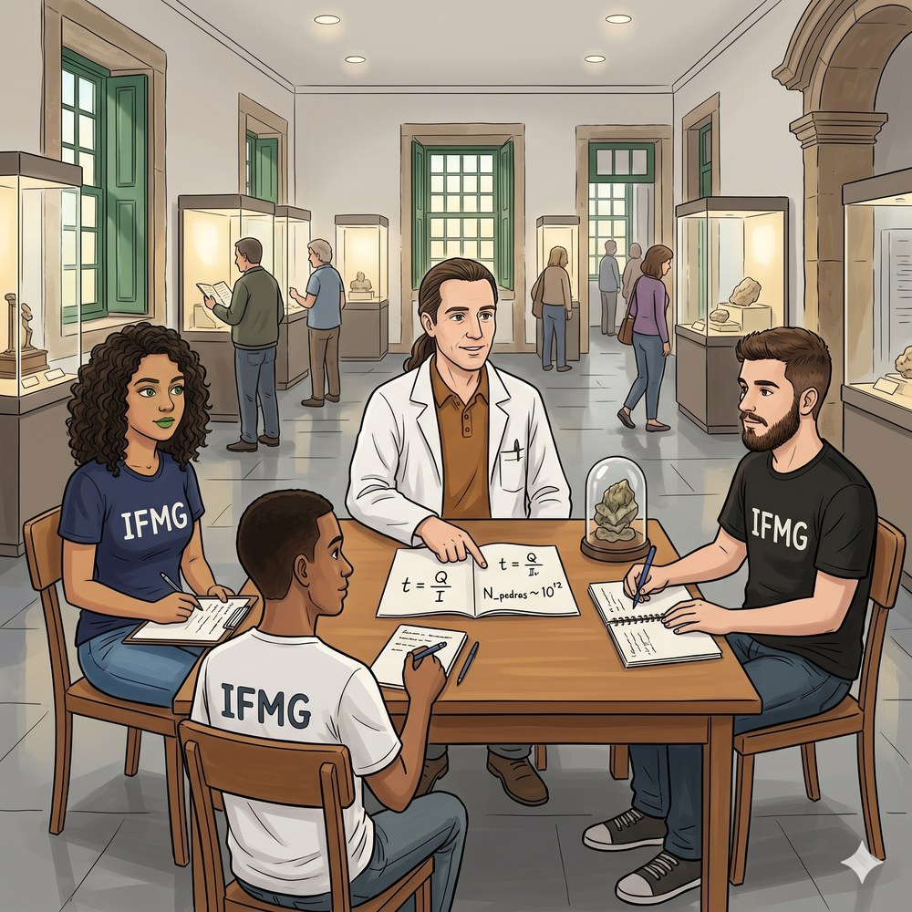
Quando o sino de São Francisco bateu dez horas, Lucas, Sofia e Pedro estavam no jardim interno do Museu, sentados em um banco de pedra entre espécies de Mata Atlântica que cresciam tão silenciosamente quanto as ideias que os três acabavam de conectar. A friagem havia cedido ao sol que entrava pelos vãos entre as copas. Cheiro de terra úmida e musgo — a versão botânica de dois bilhões de anos de história.
Lucas abriu o caderno e releu as equações. Era o tipo que precisava ver o caminho inteiro antes de confiar na resposta. E o caminho estava lá: a definição de ordem de grandeza (Equação 1), a média geométrica como centro logarítmico (Equação 2), a razão de escalas entre o átomo e o cosmos (Equação 4), a conversão do tempo geológico do Quadrilátero Ferrífero (Equação 5) e a equação t = Q/I conectando a vida de uma pilha AA à vida de uma mina (Equação 6).
— Cada tópico usa a mesma operação básica — disse ele, com a calma de quem chegou a uma conclusão depois de verificar cada passo. — Você pega dois extremos. Calcula a razão. Encontra o expoente. Interpreta o resultado em casas decimais. O conteúdo muda — grãos de quartzo, tempos geológicos, reservas minerais —, mas a lógica não.
Sofia já havia traduzido isso em imagem concreta. Ela apontou para a vitrine visível pela porta aberta do jardim — o compasso de escalas logarítmicas que o Prof. Julio havia mostrado no início da visita.
— Aquele instrumento faz fisicamente o que nós fizemos matematicamente. Ele encontra a média geométrica por geometria. Eles sabiam — disse ela, sobre os engenheiros coloniais do século XVIII — sem saber que sabiam.
Pedro disse o que estava pensando desde o Tópico 5:
— Na prática, é assim: olho para um problema, estimo os extremos, calculo a média geométrica se eles diferem muito, acho a ordem de grandeza do resultado e uso isso para decidir. Não preciso do número exato. Preciso da casa certa. Uns dez caminhões, ou uns cem, ou uns mil. Isso já é suficiente para planejar.
O Prof. Julio ouviu tudo sem interromper. Depois, disse apenas:
— Fermi diria que vocês estão prontos.
A próxima trilha vai ensinar a situar no espaço aquilo que hoje aprenderam a situar nas casas decimais. Porque depois de saber o quanto, a física pergunta: onde? Mas antes disso — o Testinho aguarda.
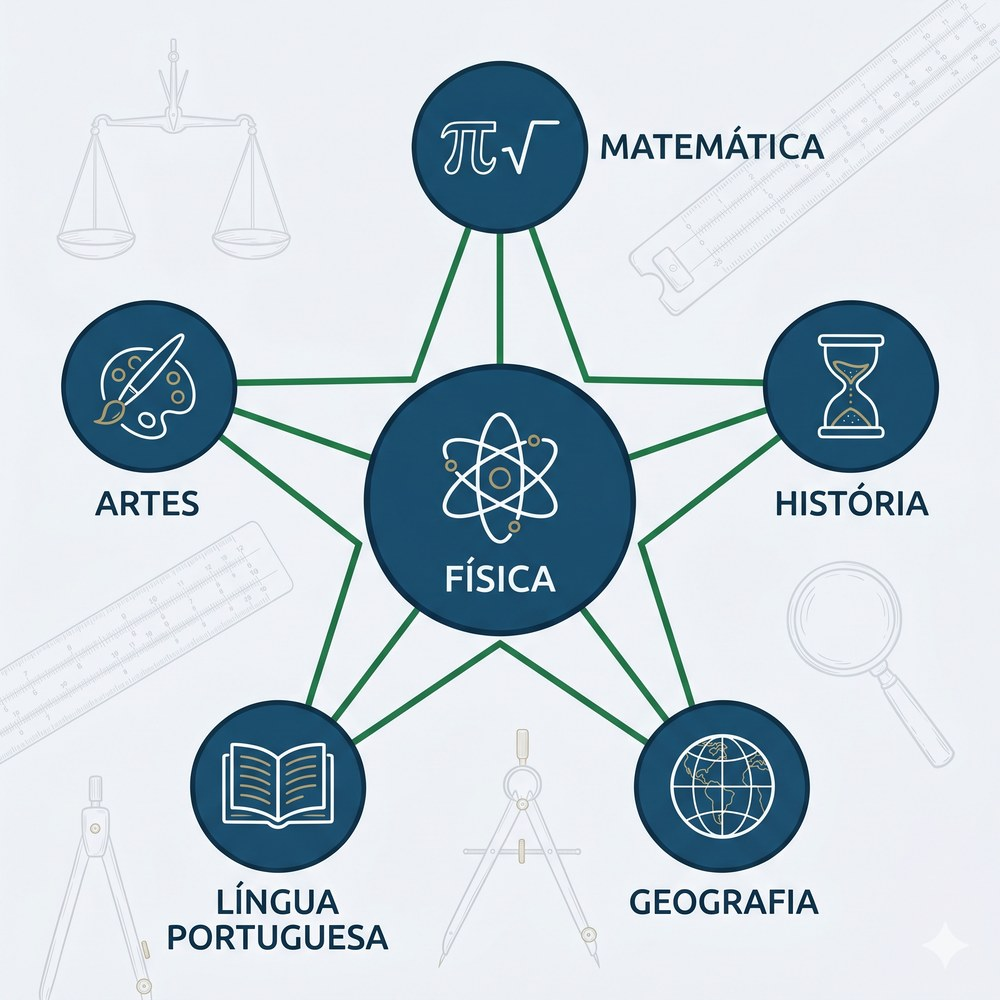
Quando a Física se encontra com outra disciplina, o caminho até a resposta segue oito etapas — sempre as mesmas. Esse protocolo chama-se Componente 5 e é o método que técnicos de mineração usam para resolver problemas reais. Pratique-o aqui: você vai reaplicá-lo integralmente no Trabalho (TR) desta trilha.
| # | Etapa | Ação |
|---|---|---|
| 1 | Compreender | Leia o enunciado e identifique o que se pede. |
| 2 | Dados | Liste os dados fornecidos com unidades. |
| 3 | Hipóteses | Declare as simplificações assumidas. |
| 4 | Representar | Faça um diagrama, tabela ou esquema visual. |
| 5 | Equacionar | Escreva as equações que conectam os dados ao que se pede. |
| 6 | Resolver | Substitua e calcule passo a passo. |
| 7 | Verificar | Confira unidades, ordem de grandeza e coerência. |
| 8 | Responder | Responda o que foi pedido, com unidade e interpretação. |
Usando a ferramenta de distância do Google Maps, meça em linha reta os seguintes percursos com origem na Praça Tiradentes, Ouro Preto: (a) até o pico do Itacolomi; (b) até Belo Horizonte; (c) até a Lua (valor padrão: 384 400 km); (d) até o Sol (149,6 milhões de km). Calcule log10 de cada distância em metros e represente todas em um eixo logarítmico desenhado à mão em papel milimetrado. Qual é a ordem de grandeza de cada distância? Em quantas ordens de grandeza a distância até o Sol supera a distância até o Itacolomi? Justifique com cálculo explícito.
Pesquise em fontes históricas estimativas do volume total de ouro extraído das minas de Ouro Preto entre 1700 e 1800. Os dados geralmente aparecem em arrobas — converta para quilogramas e para metros cúbicos (densidade do ouro: 19 300 kg/m³). Calcule a ordem de grandeza do volume total extraído e compare com o volume de uma galeria histórica típica (∼100 m × 2 m × 2 m). Em quantas galerias completas caberia todo o ouro extraído no século XVIII?
O Quadrilátero Ferrífero ocupa ∼7 000 km². Ouro Preto (município) ocupa ∼1 200 km². Calcule: (a) quantas vezes Ouro Preto cabe dentro do QF; (b) a ordem de grandeza dessa razão; (c) quantas vezes a Praça Tiradentes (≈ 0,025 km²) cabe dentro do QF. Represente as três escalas em croqui fora de escala com OG de cada área. Que escala de observação (satélite, aérea, terrestre) seria adequada para cada nível?
Leia o poema A Máquina do Mundo, de Carlos Drummond de Andrade (1951). Identifique pelo menos três passagens em que o poeta usa linguagem de escala, grandeza ou amplitude — metáforas que remetem à enormidade do cosmos, à pequenez humana ou à medida do inatingível. Para cada passagem, aponte qual OG física (em metros ou em anos) poderia corresponder à imagem poética. Drummond era mineiro de Itabira — cidade sobre uma das maiores reservas de ferro do planeta. Como esse dado biográfico ressoa na forma como o poeta mede o cosmos?
Observe o teto ilusionista pintado por Mestre Ataíde na Igreja São Francisco de Assis em Ouro Preto — a menos de 300 metros do Museu. Ataíde criou profundidade onde há superfície plana usando perspectiva e escala visual. Pesquise: (a) dimensão real do teto (comprimento × largura, em metros); (b) profundidade ilusória percebida pelo olho humano (estimada); (c) calcule a razão entre as duas e expresse em OG. Como a física óptica explica essa “estimativa de Fermi visual” que Ataíde realizou por intuição?
“A arte é uma mentira que nos faz perceber a verdade.”
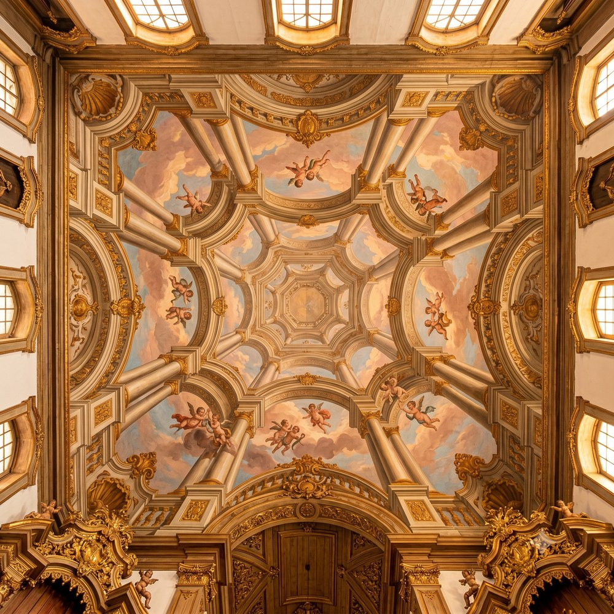
A Física ensina a medir o mensurável. A arte de Manuel da Costa Ataíde ensina a criar o imensurável — uma profundidade que não existe no suporte, fabricada por pigmentos minerais sobre reboco de cal e areia. O teto da nave central da Igreja São Francisco de Assis, em Ouro Preto, é uma obra de ilusionismo pictórico: Ataíde simulou uma cúpula aberta para o céu onde há apenas superfície plana, usando perspectiva aérea, escorço de figuras humanas e gradação de cor que engana o sistema visual do observador posicionado na nave. A técnica — chamada quadratura ou sotto in su (“de baixo para cima”) — era conhecida dos mestres italianos do Renascimento e do Barroco (Andrea Pozzo, 1642–1709, é a referência canônica), mas Ataíde a adaptou ao contexto colonial mineiro: os pigmentos eram minerais locais (ocres, óxidos de ferro do Quadrilátero Ferrífero), e os anjos da cena central têm traços mestiços — rompendo com a tradição europeia branca e inserindo a realidade étnica de Ouro Preto na obra sacra. A razão entre a profundidade ilusória percebida (∼8 m) e a espessura real do suporte (∼5 cm) é da ordem de 102 — duas ordens de grandeza criadas por geometria, cor e conhecimento empírico da percepção humana. Ataíde não sabia calcular log10; mas sabia, com precisão de mestre, quanto o olho humano pode ser convencido a ver além da superfície.
Visite com atenção. A Igreja São Francisco de Assis fica a menos de 300 metros do Museu de Ciência e Técnica — basta descer a ladeira. Quando entrar na nave central, deite-se no banco do fundo (como os guias sugerem) e olhe para cima: a cúpula pintada por Ataíde vai parecer real. É a demonstração mais eloquente de “estimativa de Fermi visual” que Ouro Preto oferece — e custa menos que uma pilha AA.
BONJORNO, J. R. Identidade Saraiva: Física. São Paulo: Saraiva, 2024.
MAXIMO, A. et al. Física: contexto & aplicações. São Paulo: Scipione, 2013.
TALAVEIRA, A. C. et al. Física: ensino médio, v. único. São Paulo: Nova Geração, 2005.
BLOOM, Benjamin S. (org.). O desenvolvimento de talentos na juventude. Porto Alegre: Globo, 1988.
HEWITT, Paul G. Física conceitual. 12. ed. Porto Alegre: Bookman, 2015.
NICOLELIS, Miguel. O verdadeiro criador de tudo: como o cérebro humano esculpiu o universo que conhecemos. São Paulo: Planeta, 2020.
PIAZZI, Pierluigi. Aprendendo inteligência: manual de instruções do cérebro para estudantes em geral. São Paulo: Aleph, 2008.
PIAZZI, Pierluigi. Inteligência em concursos: manual de instruções do cérebro para concurseiros e universitários. São Paulo: Aleph, 2013.